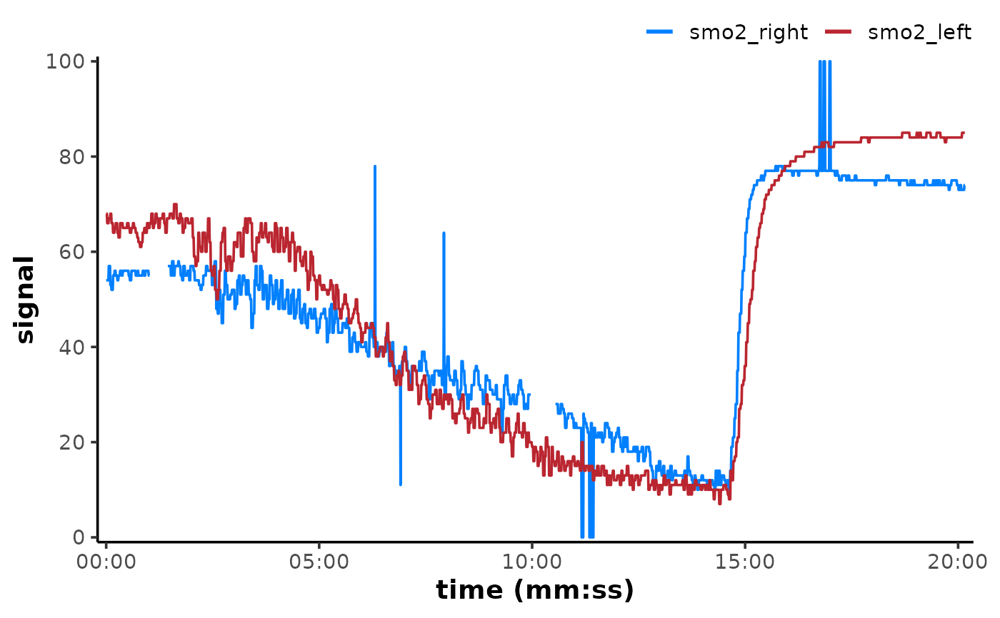

A [ggplot2][ggplot2::ggplot2-package] theme for display.
Usage
theme_mnirs(
base_size = 14,
base_family = "sans",
border = c("partial", "full"),
ink = "black",
paper = "white",
accent = "#0080ff",
...
)Arguments
- base_size
Base font size, given in pts.
- base_family
Base font family.
- border
Define either a partial or full border around plots.
- ink
Colour for text and lines. Default is "black".
- paper
Background colour. Default is "white".
- accent
Accent colour for highlights. Default is "#0080ff".
- ...
Additional arguments to add to
[theme()][ggplot2::theme()].
Value
A ggplot2 object.
Details
axis.title = element_text(face = "bold")by default Modify to "plain".panel.grid.major&panel.grid.majorset to blank. Modify to= element_line()for visible grid lines.legend.position = "top"by default Modify"none"to remove legend entirely.border = "partial"usespanel.border = element_blank()andaxis.line = element_line().border = "full"usespanel.border = element_rect(colour = "black",linewidth = 1)andaxis.line = element_line().base_family = "sans"by default."Merriweather Sans"is a nice alternative font which can be installed from https://fonts.google.com/specimen/Merriweather+Sans.
Examples
library(ggplot2)
## set theme for the current script
theme_set(theme_mnirs())
## plot example data
read_mnirs(
file_path = example_mnirs("moxy_ramp"),
nirs_channels = c(smo2_left = "SmO2 Live", smo2_right = "SmO2 Live(2)"),
time_channel = c(time = "hh:mm:ss"),
verbose = FALSE
) |>
plot(label_time = TRUE)
